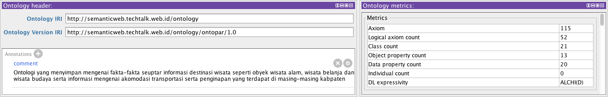

Presentasi Tesis
Sistem Question Answering Data Kabupaten
di Nusa Tenggara Barat Berbasis Multi-Ontologi
Oleh
Syamsul Muttaqin
11/323285/PPA/03632
Latar Belakang
- Propinsi Nusa Tenggara Barat terdiri dari 8 buah kabupaten dan kota yang tersebar di pulau Lombok dan Sumbawa
- NTB memiliki berbagai potensi kekayaan alam seperti pertanian, perikanan, kelautan dan pariwisata yang tersebar di hampir semua kabuaten dan kota
- Masing-masing kabupaten dilengkapi dengan website masing-masing untuk menyajikan informasi mengenai kabuaten/kota yang bersangkutan
Latar Belakang (Lanjutan)
- Informasi yang terdapat di dalam website masing-masing kabupaten hanya bersifat informasi formal dan tidak komprhensif
- Kemampuan fasilitas pencarian pada masing-masing website tidak memadai
- Solusi yang dapat digunakan adalah dengan membangun sistem question answering berbasis teknologi semantic web
Rumusan masalah
- Bagaimana membangun sebuah sistem question answering dengan menggunakan multi-ontologi sebagai sumber pengetahuannya
- Bagaimana mengkolaborasikan data dari berbagai sumber ontologi yang berbeda
Rumusan masalah (lanjutan)
- Apakah sistem question answering mampu melakukan query terhadap sumber ontologi yang berbeda serta mampu mengkolaborasikan data-data yang berasal dari ontologi yang akan dibangun dengan data yang berasal dari DBPedia Indonesia
- Apakah sistem question answering mampu memahami berbagai ekspresi OWL- DL melalui proses reasoning
Batasan masalah
- Data kabupaten yang akan digunakan untuk membentuk ontologi adalah kabupaten Lombok Timur, Lombok Tengah dan Lombok Barat yang akan diambil dari website masing-masing kabupaten serta data-data tambahan yang terdapat di dalam laman wikipedia Indonesia
- Struktur kata kunci pencarian berupa kalimat tanya tunggal yang sesuai dengan aturan tata bahasa Indonesia baku
- Sumber data lain yang akan digunakan untuk menambahkan data individual di dalam ontologi hanya dari DBPedia Indonesia.
Batasan masalah (lanjutan)
- Sistem hanya akan memproses pertanyaan yang bersifat informatif dan tidak akan memproses pertanyaan yang melibatkan perhitungan seperti ``berapa'' dan ``kapan''
- Ontologi yang akan dikembangkan menggunakan ekspresi OWL-DL
Tujuan penelitian
Membangun sistem question answering data kabupaten di Nusa Tenggara Barat berbasis semantik web untuk domain pariwisata, perintahan dan geografi, serta membangun masing-masing ontologi domain tersebut dengan standar OWL 2
Manfaat penelitin
- Memudahkan pengguna untuk melakukan pencarian informasi tentang kabupaten Lombok Timur, Lombok Tengah dan Lombok Barat dengan menggunakan bahasa alami sebagai kata kunci pencarian
- Membantu pemerintah daerah Nusa Tenggara Barat dalam menyediakan aplikasi pencarian informasi secara komprehensif sesuai dengan domain yang dibangun
- Menambah khazanah ilmu pengetahuan di bidang question answering terutama berbasis semantik web yang memanfaatkan kekuatan ekspresi pengetahuan OWL-DL
Metodologi penelitian
- Studi Literatur
- Pengumpulan data
- Anslisis dan perancangan sistem
- Implementasi hasil perancangan
- Pengujian
- Penarikan kesimpulan
Tinjauan pustaka
| No | Nama | Tahun | Tipe | Sumber pengetahuan |
|---|---|---|---|---|
| 1 | Angele et al | 2003 | QA | Ontologi Tuggal |
| 2 | Guo dan Zhang | 2006 | QA | tunggal dan web |
| 3 | Lopez et al | 2009 | QA | Multi-ontologi |
| 4 | Marriot et al | 2012 | Web Portal | Multi-ontologi |
| 5 | Abdullah dan Rehab | 2011 | QA | Ontologi Tunggal |
| 6 | Bendi | 2010 | QA | Ontologi Tunggal |
| 7 | Suryawan | 2013 | QA | Onologi Tunggal |
| 8 | Muttaqin | 2013 | QA | Multi Ontologi |
Landasan teori
- Bahasa
- Pengolahan bahasa alami
- Pembentukan token
- POS Tagging
- Pembentukan Parse Tree
- Ontologi
- Metode Pengembangan
- OWL 1 dan 2
- OWL Reasoning
- SPARQL
- SPARQL-DL
SPARQL-DL
Analisis dan Perancangan Sistem
- Sistem harus mampu mengenali ontologi dengan domain yang berbeda
- Pemrosesan bahasa alami tidak boleh terikat pada domain tertentu (bersifat universal)
- Sistem berbasis web
- Sistem melibatkan satu buah pengguna yaitu user yang akan mencari informasi
- Server menggunakan arsitektur RESTFul untuk memudahkan pengembangan multi platform
- Respon server dalam bentuk objek JSON
- Ontologi di letakkan pada alamat yang berbeda dan diakses melalui protokol HTTP
Gambaran umum sistem
- Proses tokenisasi
- Proses pembentukan parse tree dan mapping
- Proses query ontologi
Arsitektur Sistem
Modul server sistem
Alur proses query
Algoritma Tokenisasi
- Transformasi kalimat menjadi token kata
- Jika token berupa angka, maka berikan tipe kata Numeral dan lanjut ke token berikutnya
- Jika token berupa alfabet maka cek tipe kata ke dalam database, jika ditemukan maka berikan tag dan lanjut ke token berikutnya
- Jika tipe kata tidak ditemukan maka lakukan proses analisa morfologi sesuai dengan aturan tata bahasa Indonesia yang dimuat oleh Alwi et al dan lakukan pengecekan tipe kata ke dalam database
- Jika proses morfologi tidak berhasil maka tandai kata sebagai kata benda (Nomina)
Algoritma pembentukan parse tree
- Bentuk frasa dari daftar token yang telah melalui proses tokenisasi
-
Tentukan fungsi sintaksis masing-masing frasa
- Cari predikat kalimat
- Tentukan fungsi kata/frasa di sebelah kiri dan kanan predikat
Algoritma mapping parse tree
- Cek apakah konstituen frasa memiliki representasi di dalam ontologi
- Jika ada maka beri tag sesuai dengan tipe di dalam ontologi (OWLClass/Datatype Property/Object Property/Individual)
- Cek apakah ada konstituen sebelumnya, jika ada maka lakukan penggabungan terhadap semua konstituen sebelumnya dan cek ke dalam ontologi
- Jika ada berikan tag sesuai dengan tipe di dalam ontologi dan tambahkan sebagai konstituen frasa yang baru
- Jika representasi konstituen tidak ditemukan di dalam ontologi maka buang konstituen tersebut dari list
Algoritma query ontologi
- Analisa pola parse tree yang sudah di mapping
- Bentuk query SPARQL-DL
- Bentuk query SPARQL untuk semua individual hasil query SAPRQL-DL
- Lakukan query terhadap dataset
- Jika Individual merupakan instance dari DBPedia, maka lakukan query terhadap Endpoint DBPedia Indonesia
IRI dan Kompleksitas Ekspresi Ontologi

Implementasi Class Ontologi
Implementasi Object Property Ontologi
Implementasi Dtatype Property Ontologi
Objek JSON respon server
{
"code": ​200,
"message": "OK",
"answer": {
"text": "Bupati Kabupaten Lombok Timur adalah Ali Bin Dahlan",
"inferedFacts": [
{
"about": "Ali Bin Dahlan",
"data": {
"headOf": "Kabupaten Lombok Timur",
"nama": "Muhammad Ali bin Dahlan",
"comment": "Ali Bin Dahlan adalah bupati kabupaten lombok timur yang berasal dari Desa Labuhan Haji Lombok Timur"
}
},
{
"about": "Lombok Timur",
"data": {
"label": "Kabupaten Lombok Timur",
"comment": "Kabupaten Lombok Timur adalah salah satu Daerah Tingkat II di Provinsi Nusa Tenggara Barat yang terletak di sebelah timur Pulau Lombok. Ibu kota daerah ini ialah kota Selong. Kabupaten ini memiliki luas wilayah 1.60555 km dengan populasi 1.012.853 jiwa.",
"depiction": "http://upload.wikimedia.org/wikipedia/commons/3/36/Lambang_Kabupaten_Lombok_Timur.jpeg",
"nama": "Kabupaten Lombok Timur",
"lambang": "80",
"peta": "300",
"koordinat": "116",
"motto": "Patuh Karya",
"ibukota": "Selong",
"dau": "Rp. 932.462.555.000.-",
"luas": "160555",
"penduduk": "1068486",
"web": "http://www.lomboktimurkab.go.id/",
"utara": "Laut Jawa",
"selatan": "Samudra Hindia",
"barat": "Kabupaten Lombok Tengah dan Kabupaten Lombok Barat",
"timur": "Selat Alas",
"kecamatan": "20",
"kelurahan": "96",
"propinsi": "Nusa Tenggara Barat",
"kepadatan": "651",
"kodearea": "376",
"kepalaDaerah": "Bupati",
"namaKepalaDaerah": "Drs. HM. Sukiman Azmy MM"
}
}
]
}
}Implementasi Antar Muka
Hasil Penelitian
-
Pengujian konsistensi ontologi
- Pengujian masing-masing ontologi
- Pengujian merged ontologi
-
Pengujian kemampuan pemahaman dan pemrosesan bahasa
- Tokenisasi dan analisa morfologi
- Pembentukan parse tree
- Mapping
Hasil Penelitian (Lanjutan)
-
Pengujian kemampuan query SPARQL dan SPARQL-DL dan Reasoning
- Klasifikasi individual
- owl:sameAs Individual
- Transitive property
- Equivalent property
Pengujian Konsistensi Ontologi
Pengujian konsistensi merged Ontologi
Hasil pengujian Parser
Pengujian Reasoning (Klasifikasi)
Pengujian Reasoning (Klasifikasi)
Hasil pengujian Reasoning (Klasifikasi)

Hasil pengujian reasoning (Klasifikasi)
pengujian reasoning (same As)
pengujian reasoning (transitive)
pengujian reasoning (transitive)
pengujian reasoning (transitive)
pengujian reasoning (transitive)
pengujian reasoning (equivalent property)
pengujian reasoning (equivalent property)
Kesimpulan
- Sistem question answering berbasis multi-ontologi telah berhasil dikembangkan
- Parser bahasa yang dikembangkan dalam penelitian ini bersifat universal dan tidak terikat pada domain tertentu
- Sistem question answering mampu menemukan jawaban dari berbagai sumber ontologi yang berbeda, baik secara terpisah maupun secara simultan
- Sistem question answering mampu membentuk jawaban atas pertanyaan dalam bentuk rangkuman singkat serta mampu memberikan informasi tambahan terhadap individual-individual yang berhasil di query
Kesimpulan (lanjutan)
- Sistem question answering mampu membedakan pertanyaan yang memiliki makna jamak dan tunggal
- Sistem question answering yang telah dibangun mampun mengekstraksi jawaban dari data yang bersifat eksplisit maupun implisit di dalam ontologi melalui proses reasoning
- Sistem mampu memahami ekspresi kelas dan properti yang merupakan fitur dari OWL 2 seperti realisasi keanggotaan kelas kompleks (complex class expression) serta mampu menelusuri graph yang memiliki relasi melalui objek properti yang bersifat transitif
Kesimpulan (lanjutan)
- Sistem question answering dapat melakukan pencarian informasi tambahan pada sumber lain selain ontologi yang telah dibangun seperti DBPedia Indonesia apabila individual tersebut memiliki relasi owl:sameAs dengan individual yang berasal dari DBPedia Indonesia
- Hasil merging terhadap ketiga ontologi sumber pengetahuan tidak mengakibatkan terjadinya inkonsistensi pada ontologi yang baru, sehingga keakuratan jawaban yang diberikan oleh sistem dapat dipertanggungjawabkan.
Saran
- Sistem gagal membentuk parse tree yang disebabkan oleh kesalahan sistem dalam menentukan tipe kata, untuk itu database lexicon perlu diperkaya lagi
- Seluruh rangkaian proses dilakukan secara berurutan sehingga lebih lambat, proses query dapat dilakukan secara asinkron